11GD
Б.з.б. III мыңжылдықтың соңы мен II мыңжылдықтың басындағы материалдық мәдениеттегі жетістік
трансконтинетті жолдардың пайда болуы
дөңгелекті арба мен қола өндірісінің пайда болуы
мал шаруашылығының қалыптасуы
садақ пен жебенің пайда болуы
Батыс Түрiк қағанатының орталығы
Суяб
Имақия
Сығанақ
Баласағұн
1771 жылы бүкіл үш жүздің ханы болып сайланды
Тәуке
Нұралы
Абылай
Әбілқайыр
XX ғасырдың бас кезінде шетелдік кәсіпкерлердің қолына өтті
егістік алқаптары
сауда орындары
шахталар мен кен орындары
жайылым жерлері
1979 жылы қазақ халқының мүддесімен санаспаудың көрінісі болған оқиға
Байқоңыр аймағында ғарыш айлағын құру
Неміс автономиясын кұру туралы идея
Қазақтарды жаппай депортациялау
Тың және тыңайған жерлерді игеру
2012 жылы Германияның Оңтүстік Тюрингия опера театрында сахналанған туынды
«Біржан-Сара» операсы
«Абай» операсы
«Отырар» операсы
«Жер Ана» операсы
Б.з.б 670 жылы ассириялықтармен соғыста қаза болған скиф патшасы
Томирис
Анахарсис
Зарина
Ишпакай
XVII ғ. қатаған тайпасының жазадан аман қалған бір бөлігі кетті
Үндістанға
Ауғанстанға
Иранға
Тибетке
XIX ғасырдың екінші жартысында қазақ халқының қоғамдық-саяси ойын дамытып,ұлттық сана-сезімін оятқан жағдай
хандық басқару жүйесінің қалпына келтірілуі
өлкеде капиталистік қатынастардың күйреуі
халықаралық сауда қатынастарының дұрыс жолға қойылуы
ұлттық-отаршылдық езгінің күшеюі
Ұлы Отан соғысының Батыры Бақтыораз Бейсекбаевтың ерлігі
Жау дзотын өз кеудесімен жауып жол ашты
Жанған ұшағы арқылы жау танк шоғырын жойды
Мәскеу түбінде жаудың бетін қайтарды
Рейхстагқа жеңіс туын тікті
Карта мен тарихи бiлiмдерiнiздi пайдаланып, Моғолстанның астанасын анықтаңыз
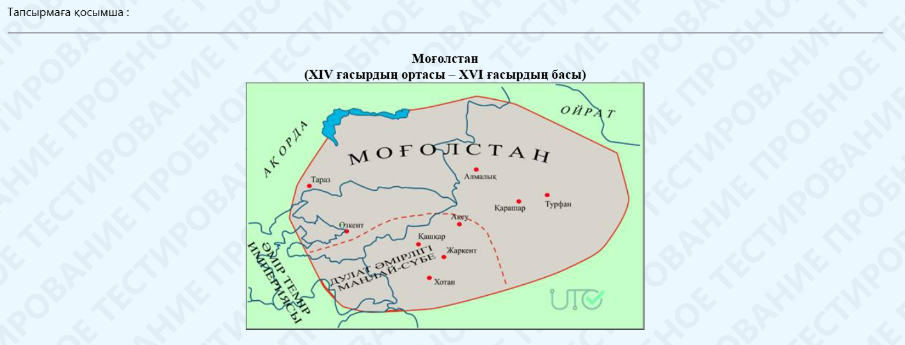
Сығанак
Тараз
Қашғар
Алмалық
Картаны және тарихи білімдеріңізді пайдаланып, Моғолстанның аумағын анықтаңыз
Жетісу, Шығыс Түркістан
Арал маңы, Сырдария
Маңғыстау түбегі
Солтүстік Қазақстан
Карта мен тарихи білімдеріңізді пайдаланып, Моғолстанның негізін құраған дулат тайпасы иеленген аумақты анықтаңыз
Алмалық аумағы
Маңлай-Сүбе аумағы
Жаркент аумағы
Қашқар аумағы
Карта мен тарихи білімдеріңізді пайдаланып, 1452-1457 жылдары Есен Бұға билігі кезінде Моғолстанға шабуыл жасаған тайпаны анықтаңыз
Башқұрттар
Ноғайлар
Ойраттар
қырғыздар
Тарихи бiлiмдерiнiздi пайдаланып, XIV ғ. екiншi жартысында «Батпақ шайқасы» кезiнде моғол әскерiн баскарған билеушiнi анықтаңыз
Қызыр Қожа
Есен бұға
Ілияс Қожа
Тоғылық Темiр
XХ ғасырдың екінші жартысы - XXI ғасырдың басындағы Қазақстан
«Жұмабек Ахметұлы Тәшенов (1915-1986 жж.) - мемлекет және қоғам қайраткері. 1952-1955 жылдары Ақтөбе облыстық партия комитетінің І хатшысы, 1955-1960 жылдары Қазақ КСР-і Жоғарғы кеңесінің Төралқасының төрағасы, 1960-1961 жылдары Қазақ КСР-і үкіметінің басшысы. Республиканың саяси, экономикалық, мәдени дамуына көп еңбек сіңірді. Тың өлкесін Ресейге, Қазақстанның мақта егетін аудандарын Өзбекстанға беруге қарсы шығып, Мұнайлы Маңғыстауды Түркіменстанға қосу жөніндегі ұсыныстарға тойтарыс берді. Тың өлкесін құру жоспарына және ядролық жарылыстар жасауға қарсылық білдірді. Шығармашылық одақтар өкілдеріне үй-пәтер бергендігі үшін Алматының ортасында «қазақ ауылын» құрды деп айыпталды. «Қазақ әдебиеті» газетін жабудан, «Социалистік Қазақстан» газетін «Қазправданың» аудармасы етіп шығарылудан қорғап қалды. «Ұлтшыл» деп айыпталып, Н. Хрущевтің нұсқауымен қызметінен босатылды. 1975 жылы одақтық дәрежедегі дербес зейнеткерлікке шықты.»
Мәнмәтінді және тарихи білімдеріңізді пайдаланып, Ж. А. Тәшеновке тағылған айыпты анықтаңыз
диссидент
пантюркист
ұлтшыл
тыңшы
XХ ғасырдың екінші жартысы - XXI ғасырдың басындағы Қазақстан
«Жұмабек Ахметұлы Тәшенов (1915-1986 жж.) - мемлекет және қоғам қайраткері. 1952-1955 жылдары Ақтөбе облыстық партия комитетінің І хатшысы, 1955-1960 жылдары Қазақ КСР-і Жоғарғы кеңесінің Төралқасының төрағасы, 1960-1961 жылдары Қазақ КСР-і үкіметінің басшысы. Республиканың саяси, экономикалық, мәдени дамуына көп еңбек сіңірді. Тың өлкесін Ресейге, Қазақстанның мақта егетін аудандарын Өзбекстанға беруге қарсы шығып, Мұнайлы Маңғыстауды Түркіменстанға қосу жөніндегі ұсыныстарға тойтарыс берді. Тың өлкесін құру жоспарына және ядролық жарылыстар жасауға қарсылық білдірді. Шығармашылық одақтар өкілдеріне үй-пәтер бергендігі үшін Алматының ортасында «қазақ ауылын» құрды деп айыпталды. «Қазақ әдебиеті» газетін жабудан, «Социалистік Қазақстан» газетін «Қазправданың» аудармасы етіп шығарылудан қорғап қалды. «Ұлтшыл» деп айыпталып, Н. Хрущевтің нұсқауымен қызметінен босатылды. 1975 жылы одақтық дәрежедегі дербес зейнеткерлікке шықты.»
Мәнмәтiндi жене тарихи бiлiмдерiңiздi пайдаланып, республика жерiн бөліп алу әрекетiмен Ресейге қосу жоспарланған тың өлкесiне бipiктipiлген өңiрдi анықтаңыз
Оңтүстiк
Шығыс
Солтүстiк
Батыс
XХ ғасырдың екінші жартысы - XXI ғасырдың басындағы Қазақстан
«Жұмабек Ахметұлы Тәшенов (1915-1986 жж.) - мемлекет және қоғам қайраткері. 1952-1955 жылдары Ақтөбе облыстық партия комитетінің І хатшысы, 1955-1960 жылдары Қазақ КСР-і Жоғарғы кеңесінің Төралқасының төрағасы, 1960-1961 жылдары Қазақ КСР-і үкіметінің басшысы. Республиканың саяси, экономикалық, мәдени дамуына көп еңбек сіңірді. Тың өлкесін Ресейге, Қазақстанның мақта егетін аудандарын Өзбекстанға беруге қарсы шығып, Мұнайлы Маңғыстауды Түркіменстанға қосу жөніндегі ұсыныстарға тойтарыс берді. Тың өлкесін құру жоспарына және ядролық жарылыстар жасауға қарсылық білдірді. Шығармашылық одақтар өкілдеріне үй-пәтер бергендігі үшін Алматының ортасында «қазақ ауылын» құрды деп айыпталды. «Қазақ әдебиеті» газетін жабудан, «Социалистік Қазақстан» газетін «Қазправданың» аудармасы етіп шығарылудан қорғап қалды. «Ұлтшыл» деп айыпталып, Н. Хрущевтің нұсқауымен қызметінен босатылды. 1975 жылы одақтық дәрежедегі дербес зейнеткерлікке шықты.»
Мәнмәтінді және тарихи білімдеріңізді пайдаланып Ж.А. Тәшеновтің Қазақстан тарихындағы рөлін анықтаңыз
Тың игеру реформасына бастамашы болды
Қазақстанның аумақтық тұтастығын сақтап қалды
Байқоңыр ғарыш айлағының ашылуына үлес қосты
Шет елдегі қазақтардың отанына оралуына көмектесті
XХ ғасырдың екінші жартысы - XXI ғасырдың басындағы Қазақстан
«Жұмабек Ахметұлы Тәшенов (1915-1986 жж.) - мемлекет және қоғам қайраткері. 1952-1955 жылдары Ақтөбе облыстық партия комитетінің І хатшысы, 1955-1960 жылдары Қазақ КСР-і Жоғарғы кеңесінің Төралқасының төрағасы, 1960-1961 жылдары Қазақ КСР-і үкіметінің басшысы. Республиканың саяси, экономикалық, мәдени дамуына көп еңбек сіңірді. Тың өлкесін Ресейге, Қазақстанның мақта егетін аудандарын Өзбекстанға беруге қарсы шығып, Мұнайлы Маңғыстауды Түркіменстанға қосу жөніндегі ұсыныстарға тойтарыс берді. Тың өлкесін құру жоспарына және ядролық жарылыстар жасауға қарсылық білдірді. Шығармашылық одақтар өкілдеріне үй-пәтер бергендігі үшін Алматының ортасында «қазақ ауылын» құрды деп айыпталды. «Қазақ әдебиеті» газетін жабудан, «Социалистік Қазақстан» газетін «Қазправданың» аудармасы етіп шығарылудан қорғап қалды. «Ұлтшыл» деп айыпталып, Н. Хрущевтің нұсқауымен қызметінен босатылды. 1975 жылы одақтық дәрежедегі дербес зейнеткерлікке шықты.»
Мәнмәтінді және тарихи білімдеріңізді пайдаланып, Ж.Тәшеновтың 1952-1955жылдары атқарған қызметін анықтаңыз
Шымкент облыстық атқару комитетінің төрағасы
Қазақ КСР Жоғарғы Кеңесінің төрағасы
Қазақ КСР Министрлер Кеңесінің төрағасы
Ақтөбе облыстық партия комитетінің І хатшысы
XХ ғасырдың екінші жартысы - XXI ғасырдың басындағы Қазақстан
«Жұмабек Ахметұлы Тәшенов (1915-1986 жж.) - мемлекет және қоғам қайраткері. 1952-1955 жылдары Ақтөбе облыстық партия комитетінің І хатшысы, 1955-1960 жылдары Қазақ КСР-і Жоғарғы кеңесінің Төралқасының төрағасы, 1960-1961 жылдары Қазақ КСР-і үкіметінің басшысы. Республиканың саяси, экономикалық, мәдени дамуына көп еңбек сіңірді. Тың өлкесін Ресейге, Қазақстанның мақта егетін аудандарын Өзбекстанға беруге қарсы шығып, Мұнайлы Маңғыстауды Түркіменстанға қосу жөніндегі ұсыныстарға тойтарыс берді. Тың өлкесін құру жоспарына және ядролық жарылыстар жасауға қарсылық білдірді. Шығармашылық одақтар өкілдеріне үй-пәтер бергендігі үшін Алматының ортасында «қазақ ауылын» құрды деп айыпталды. «Қазақ әдебиеті» газетін жабудан, «Социалистік Қазақстан» газетін «Қазправданың» аудармасы етіп шығарылудан қорғап қалды. «Ұлтшыл» деп айыпталып, Н. Хрущевтің нұсқауымен қызметінен босатылды. 1975 жылы одақтық дәрежедегі дербес зейнеткерлікке шықты.»
Мәнмәтінді және тарихи білімдеріңізді пайдаланып, 1960 жылдары Қазақстан жерін бөлу кезінде одақтас республикалар мен оларға берілуге тиісті болған маңызды экономикалық салаларды сәйкестендіріңіз1.Түркіменстан; 2. Өзбекстан; 3. Ресей.
А. Мақталы алқаптар; Ә. Тың өлкесі; Б. Мұнай кен орындары
1-Ә, 2-А3-Б
1-А, 2-Б, 3-Ә
1-Б, 2-Ә, 3-А
1-Б, 2-А, 3-Ә
1-мәтін
Адамдар қандай болмасын әр түрлі істің айқындығын, дәлдігін, нақтылығын қалайды ғой. Ондай әрекеттерінде ешкімге зиянын тигізбейтін, барша жұртқа түсінікті ұғым болуға тиіс.
«Осы ойдың мәнісі не?» деген мәселе төңірегінде бір топ шәкірт өзара пікірлері тоғыспай, ұзак таласады. Бірақ қанша айтысса да, тиянақты бір түйінге тоқтала алмайды. Ақырында ғұлама ұстаздарына барып, пікірталастарының түйінін шешіп беруі үшін өтініштерін айтады:
– О, құрметті ұстаз, біз ақиқаттың не екені, оның өмірге қалай келіп, адамға қалай ықпал ететіні, атқаратын қызметінің мәртебесі жайында пікір таластырып, бір түйінге тоқтала алмай дал болдық. Осы жайды түсіндіріп, түйінін тауып беруіңізді өтінеміз!...
Әбунасыр біраз ойланып отырды да, әлден уақытта басын жоғары көтеріп алып, шәкірттеріне былай деді:
– Әрбір адамның көкейінде өзі иланыммен сеніп ұстанған пікірі мен нанымы болады. Сол пікір мен наным сенімді іске, ойға жетелейді. Сол жекелік пікір мен сенім басқа бір адамның пікірі мен сеніміне сәйкес келсе, сонда пікірлер тоғысады да, ақиқат туады. Пікір мен сенімнің бір арнаға түспеуі дау-жанжалды қоздырады. Ал акиқат адамға айқындықты үйретеді. Онсыз дәлдік жоқ.
Әбунасыр қорытқан ой шәкірттердің санасындағы ақиқаттың әлі бұлыңғыр жолын нұрландырып жіберді, айқындықтың негізін анық танытты.
1. Ойшылдың ақиқаттың тууы туралы пікірі
Көзқарастардың бір жерден шығуынан туады
Көзқарастардың бір жерден шығуынан туады
Біреудің сөзі ақиқат бола алады
Көзқарастардың әртүрлілігінен туады
1-мәтін
Адамдар қандай болмасын әр түрлі істің айқындығын, дәлдігін, нақтылығын қалайды ғой. Ондай әрекеттерінде ешкімге зиянын тигізбейтін, барша жұртқа түсінікті ұғым болуға тиіс.
«Осы ойдың мәнісі не?» деген мәселе төңірегінде бір топ шәкірт өзара пікірлері тоғыспай, ұзак таласады. Бірақ қанша айтысса да, тиянақты бір түйінге тоқтала алмайды. Ақырында ғұлама ұстаздарына барып, пікірталастарының түйінін шешіп беруі үшін өтініштерін айтады:
– О, құрметті ұстаз, біз ақиқаттың не екені, оның өмірге қалай келіп, адамға қалай ықпал ететіні, атқаратын қызметінің мәртебесі жайында пікір таластырып, бір түйінге тоқтала алмай дал болдық. Осы жайды түсіндіріп, түйінін тауып беруіңізді өтінеміз!...
Әбунасыр біраз ойланып отырды да, әлден уақытта басын жоғары көтеріп алып, шәкірттеріне былай деді:
– Әрбір адамның көкейінде өзі иланыммен сеніп ұстанған пікірі мен нанымы болады. Сол пікір мен наным сенімді іске, ойға жетелейді. Сол жекелік пікір мен сенім басқа бір адамның пікірі мен сеніміне сәйкес келсе, сонда пікірлер тоғысады да, ақиқат туады. Пікір мен сенімнің бір арнаға түспеуі дау-жанжалды қоздырады. Ал акиқат адамға айқындықты үйретеді. Онсыз дәлдік жоқ.
Әбунасыр қорытқан ой шәкірттердің санасындағы ақиқаттың әлі бұлыңғыр жолын нұрландырып жіберді, айқындықтың негізін анық танытты.
2. Шәкірттердің ұстазымен кездескеннен кейін алған әсері
Ақиқат тууы үшін пікірлердің тоғысуының міндетті емес екендігін түсінеді.
Өмірлік жолдарындағы маңызды нәрсені анықтайды.
Ұстанған пікірлері мен нанымдарының өзгермелі екендігін түсінеді.
Тиянақты түйінге келе алмайды.
2 - мәтін
Шахмат ойыны тарихынан
1. Шахмат ойыны Үндістаннан Қытайға, Тибетке, Малайзия аралдарына, Иранға тараған. Ал Ираннан шығыс халықтарына, арабтарға, армяндарға, грузиндерге, византиялықтар мен түріктерге ауысқан. Иран, Кавказ арқылы Ресейге, арабтар арқылы Еуропаға, одан кейін Францияға, Германияға, Британияға, Испанияға дейін жеткен. Археологтардың соңғы зерттеулері бойынша шахмат ойыны Киев пен Новгород жерінде кең тараған. XIX ғасырда шахмат ойыны бойынша халықаралық жарыстар, чемпиондардың турнирлері өткізіле бастады.
2. Шахмат – ақыл-ой спорты. Шахмат сөзінің мағынасы парсы тілінде «патша (шах) өлді (мат)» дегенді білдіреді. Әлемдегі кең таралған ойындардың бірі саналады. Шахмат екі ойыншы арасында шахмат тақтасында ойналады. Ойын тақтасы алпыс төрт шаршыдан тұрады. Ойынның басында әрбір ойыншының иелігінде ақ немесе қара түстІ он алты тас (шахмат фигурасы) болады: бір король, бір ферзь, екі піл, екі ат, екі ладья және сегіз пешка. Ойынның мақсаты – қарсыластың тастарын шабуылдай отырып, корольға мат қою.
3. Берілген тұжырымдардың қайсысы дұрыс?
1. Шахмат фигураларының саны – 18.
2. XIX ғасырда шахмат ойынынан чемпионаттар өткізілді.
3. Шахмат - әлі де кең таралмаған ойын.
Тек екінші
Барлығы теріс
Барлығы дұрыс
Тек үшінші
2 - мәтін
Шахмат ойыны тарихынан
1. Шахмат ойыны Үндістаннан Қытайға, Тибетке, Малайзия аралдарына, Иранға тараған. Ал Ираннан шығыс халықтарына, арабтарға, армяндарға, грузиндерге, византиялықтар мен түріктерге ауысқан. Иран, Кавказ арқылы Ресейге, арабтар арқылы Еуропаға, одан кейін Францияға, Германияға, Британияға, Испанияға дейін жеткен. Археологтардың соңғы зерттеулері бойынша шахмат ойыны Киев пен Новгород жерінде кең тараған. XIX ғасырда шахмат ойыны бойынша халықаралық жарыстар, чемпиондардың турнирлері өткізіле бастады.
2. Шахмат – ақыл-ой спорты. Шахмат сөзінің мағынасы парсы тілінде «патша (шах) өлді (мат)» дегенді білдіреді. Әлемдегі кең таралған ойындардың бірі саналады. Шахмат екі ойыншы арасында шахмат тақтасында ойналады. Ойын тақтасы алпыс төрт шаршыдан тұрады. Ойынның басында әрбір ойыншының иелігінде ақ немесе қара түстІ он алты тас (шахмат фигурасы) болады: бір король, бір ферзь, екі піл, екі ат, екі ладья және сегіз пешка. Ойынның мақсаты – қарсыластың тастарын шабуылдай отырып, корольға мат қою.
4. Шахмат ең алғаш пайда болған ел
Қытай
Иран
Үндістан
Кавказ
2 - мәтін
Шахмат ойыны тарихынан
1. Шахмат ойыны Үндістаннан Қытайға, Тибетке, Малайзия аралдарына, Иранға тараған. Ал Ираннан шығыс халықтарына, арабтарға, армяндарға, грузиндерге, византиялықтар мен түріктерге ауысқан. Иран, Кавказ арқылы Ресейге, арабтар арқылы Еуропаға, одан кейін Францияға, Германияға, Британияға, Испанияға дейін жеткен. Археологтардың соңғы зерттеулері бойынша шахмат ойыны Киев пен Новгород жерінде кең тараған. XIX ғасырда шахмат ойыны бойынша халықаралық жарыстар, чемпиондардың турнирлері өткізіле бастады.
2. Шахмат – ақыл-ой спорты. Шахмат сөзінің мағынасы парсы тілінде «патша (шах) өлді (мат)» дегенді білдіреді. Әлемдегі кең таралған ойындардың бірі саналады. Шахмат екі ойыншы арасында шахмат тақтасында ойналады. Ойын тақтасы алпыс төрт шаршыдан тұрады. Ойынның басында әрбір ойыншының иелігінде ақ немесе қара түстІ он алты тас (шахмат фигурасы) болады: бір король, бір ферзь, екі піл, екі ат, екі ладья және сегіз пешка. Ойынның мақсаты – қарсыластың тастарын шабуылдай отырып, корольға мат қою.
5. Мәтіннің бірінші бөліміндегі негізгі ой
Шахмат терминінің шығуы
Шахмат ақыл-ойды қажет етеді
Шахмат ойынының, пайда болуы
Шахмат ойынының таралуы
2 - мәтін
Шахмат ойыны тарихынан
1. Шахмат ойыны Үндістаннан Қытайға, Тибетке, Малайзия аралдарына, Иранға тараған. Ал Ираннан шығыс халықтарына, арабтарға, армяндарға, грузиндерге, византиялықтар мен түріктерге ауысқан. Иран, Кавказ арқылы Ресейге, арабтар арқылы Еуропаға, одан кейін Францияға, Германияға, Британияға, Испанияға дейін жеткен. Археологтардың соңғы зерттеулері бойынша шахмат ойыны Киев пен Новгород жерінде кең тараған. XIX ғасырда шахмат ойыны бойынша халықаралық жарыстар, чемпиондардың турнирлері өткізіле бастады.
2. Шахмат – ақыл-ой спорты. Шахмат сөзінің мағынасы парсы тілінде «патша (шах) өлді (мат)» дегенді білдіреді. Әлемдегі кең таралған ойындардың бірі саналады. Шахмат екі ойыншы арасында шахмат тақтасында ойналады. Ойын тақтасы алпыс төрт шаршыдан тұрады. Ойынның басында әрбір ойыншының иелігінде ақ немесе қара түстІ он алты тас (шахмат фигурасы) болады: бір король, бір ферзь, екі піл, екі ат, екі ладья және сегіз пешка. Ойынның мақсаты – қарсыластың тастарын шабуылдай отырып, корольға мат қою.
6. Шахмат ойыны түріктерге қайдан жеткен?
Кавказдан
Грузиндерден
Қытайдан
Ираннан
3 - мәтін
1. Жұмыр жер адамзат баласының ғұмыр-шежіресін өн бойына қаттап жатады. Туған жерді сүю, Отанды сүю сияқты аскақ азаматтық сезімдердің берік негізі ел мен жердің шежіресі сырынан басталады.
2. Топонимия – жердің тілі, оның төсін тұрақ еткен ұрпақтың ұғым-түсінігінен, тіршілік-тынысынан қалған мұра. Көшпелі халқымыз жерді Ана деп таныған, өйткені олардың бүкіл тірлігі, қуаньш-қызығы» күнкөріс жағдайы тек қана туған жерімен тамырлас болған. Жазушы Ә.Кекілбаевтың айтуынша, көшпелілер ұлдарына қоймайтыи жақсы аттарды жерлеріне қойып баққан.
3. Көрнекті ғалым Қаныш Сәтбаевтың койын дәптерінде мынадай жазу бар: «Мың шұқыр. Демек, бұл жерде байырғы кен қазба орындары болған. Анықтау керек». «Қара тас. Халық ұғымында бұлай деп темірді емеурін етеді». «Көк тас. Бұлай аталған жерде мыс бар деп топшылауға болады». «Алтын тапқан» атауы – алтынның бар екенін анғартады. Әрине, тегін емес». «Жезқазған. Демек, жез өндірілген деген сөз. Дәл аталған». «Жыланды. Түсті металл рудасы бар болу керек». Ғалым топонимиядан халықтың өмір тәжірибесімен сабақтас сыр іздейді. Ол сырды ғылыми өремен ұштастырады. Онысы негізсіз болмағаны белгілі.
4. Туған жер төсіндегі алыс заманалардан бері қарай тартылған ұрпақтар сабақтастығы, дүние дидарына қандай талғаммен карай білгені, табиғат сұлулығының алуан қырын қалай танып түйсінгендігі географиялық атауларда тайға таңба басқандай сайрап жатыр.
7. Халық ұғымындағы темір атауы
Алтын тапқан
Жыланды
Көк тас
Қара тас
3 - мәтін
1. Жұмыр жер адамзат баласының ғұмыр-шежіресін өн бойына қаттап жатады. Туған жерді сүю, Отанды сүю сияқты аскақ азаматтық сезімдердің берік негізі ел мен жердің шежіресі сырынан басталады.
2. Топонимия – жердің тілі, оның төсін тұрақ еткен ұрпақтың ұғым-түсінігінен, тіршілік-тынысынан қалған мұра. Көшпелі халқымыз жерді Ана деп таныған, өйткені олардың бүкіл тірлігі, қуаньш-қызығы» күнкөріс жағдайы тек қана туған жерімен тамырлас болған. Жазушы Ә.Кекілбаевтың айтуынша, көшпелілер ұлдарына қоймайтыи жақсы аттарды жерлеріне қойып баққан.
3. Көрнекті ғалым Қаныш Сәтбаевтың койын дәптерінде мынадай жазу бар: «Мың шұқыр. Демек, бұл жерде байырғы кен қазба орындары болған. Анықтау керек». «Қара тас. Халық ұғымында бұлай деп темірді емеурін етеді». «Көк тас. Бұлай аталған жерде мыс бар деп топшылауға болады». «Алтын тапқан» атауы – алтынның бар екенін анғартады. Әрине, тегін емес». «Жезқазған. Демек, жез өндірілген деген сөз. Дәл аталған». «Жыланды. Түсті металл рудасы бар болу керек». Ғалым топонимиядан халықтың өмір тәжірибесімен сабақтас сыр іздейді. Ол сырды ғылыми өремен ұштастырады. Онысы негізсіз болмағаны белгілі.
4. Туған жер төсіндегі алыс заманалардан бері қарай тартылған ұрпақтар сабақтастығы, дүние дидарына қандай талғаммен карай білгені, табиғат сұлулығының алуан қырын қалай танып түйсінгендігі географиялық атауларда тайға таңба басқандай сайрап жатыр.
8. Мәтіннің 4-бөліміне сәйкес тұжырым
Қазақ халқы жерді анасындай қастерлеп кие тұтқан.
Қ.Сәтбаев жер-су атауларын қойын дәптеріне жинақтаған.
Жер-су атауларынан ұрпақтар сабақтастығы айқын танылады.
Азаматтық сезімдердің негізі ел-жер шежіресінен басталады
3 - мәтін
1. Жұмыр жер адамзат баласының ғұмыр-шежіресін өн бойына қаттап жатады. Туған жерді сүю, Отанды сүю сияқты аскақ азаматтық сезімдердің берік негізі ел мен жердің шежіресі сырынан басталады.
2. Топонимия – жердің тілі, оның төсін тұрақ еткен ұрпақтың ұғым-түсінігінен, тіршілік-тынысынан қалған мұра. Көшпелі халқымыз жерді Ана деп таныған, өйткені олардың бүкіл тірлігі, қуаньш-қызығы» күнкөріс жағдайы тек қана туған жерімен тамырлас болған. Жазушы Ә.Кекілбаевтың айтуынша, көшпелілер ұлдарына қоймайтыи жақсы аттарды жерлеріне қойып баққан.
3. Көрнекті ғалым Қаныш Сәтбаевтың койын дәптерінде мынадай жазу бар: «Мың шұқыр. Демек, бұл жерде байырғы кен қазба орындары болған. Анықтау керек». «Қара тас. Халық ұғымында бұлай деп темірді емеурін етеді». «Көк тас. Бұлай аталған жерде мыс бар деп топшылауға болады». «Алтын тапқан» атауы – алтынның бар екенін анғартады. Әрине, тегін емес». «Жезқазған. Демек, жез өндірілген деген сөз. Дәл аталған». «Жыланды. Түсті металл рудасы бар болу керек». Ғалым топонимиядан халықтың өмір тәжірибесімен сабақтас сыр іздейді. Ол сырды ғылыми өремен ұштастырады. Онысы негізсіз болмағаны белгілі.
4. Туған жер төсіндегі алыс заманалардан бері қарай тартылған ұрпақтар сабақтастығы, дүние дидарына қандай талғаммен карай білгені, табиғат сұлулығының алуан қырын қалай танып түйсінгендігі географиялық атауларда тайға таңба басқандай сайрап жатыр.
9. Қ.Сәтбаев мыс болуы мүмкін екенін болжаған жер
Жылаңды
Көк тас
Жезқазған
Қара тас
3 - мәтін
1. Жұмыр жер адамзат баласының ғұмыр-шежіресін өн бойына қаттап жатады. Туған жерді сүю, Отанды сүю сияқты аскақ азаматтық сезімдердің берік негізі ел мен жердің шежіресі сырынан басталады.
2. Топонимия – жердің тілі, оның төсін тұрақ еткен ұрпақтың ұғым-түсінігінен, тіршілік-тынысынан қалған мұра. Көшпелі халқымыз жерді Ана деп таныған, өйткені олардың бүкіл тірлігі, қуаньш-қызығы» күнкөріс жағдайы тек қана туған жерімен тамырлас болған. Жазушы Ә.Кекілбаевтың айтуынша, көшпелілер ұлдарына қоймайтыи жақсы аттарды жерлеріне қойып баққан.
3. Көрнекті ғалым Қаныш Сәтбаевтың койын дәптерінде мынадай жазу бар: «Мың шұқыр. Демек, бұл жерде байырғы кен қазба орындары болған. Анықтау керек». «Қара тас. Халық ұғымында бұлай деп темірді емеурін етеді». «Көк тас. Бұлай аталған жерде мыс бар деп топшылауға болады». «Алтын тапқан» атауы – алтынның бар екенін анғартады. Әрине, тегін емес». «Жезқазған. Демек, жез өндірілген деген сөз. Дәл аталған». «Жыланды. Түсті металл рудасы бар болу керек». Ғалым топонимиядан халықтың өмір тәжірибесімен сабақтас сыр іздейді. Ол сырды ғылыми өремен ұштастырады. Онысы негізсіз болмағаны белгілі.
4. Туған жер төсіндегі алыс заманалардан бері қарай тартылған ұрпақтар сабақтастығы, дүние дидарына қандай талғаммен карай білгені, табиғат сұлулығының алуан қырын қалай танып түйсінгендігі географиялық атауларда тайға таңба басқандай сайрап жатыр.
10. Қ.Сәтбаевтың жер-су атауларына ерекше ден коюының себебі
Табиғат сұлулығының алуан қырын зерттеді
Адам есімдерін жер атауларымен қоса қарастырды
Халық күнкөрісі жағдайын аңызбен байланыстырды
Жер тіліндегі халық тәжірибесін ғылыммен ұштастырды
Үш санның қосындысы 920. Бірінші сан қосындының 18%-ын, екінші сан 44%-ын құрайды. Үшінші санды табыңыз.
348,4
349,6
348,8
340,5
Банкке жылдық өсімі 20%-ке тең 200 000 теңге салды. 1 жылдан кейін сома мөлшері қандай болады?
210 000 тг
220 000 тг
230 000 тг
240 000 тг
18%-тік 2 кг тұз ерітіндісіне бір стакан (0,25 кг) су араластырған. Сонда тұз ерітіндісінің жаңа концентрациясын табыңыз (пайыз есебімен алғанда):
18%
16%
14%
12%
Масштабы 1:10 000 000 картада Астана мен Алматы арасы 17 см. Осы ара қашықтық масштабы 1: 85 000 000 картада қанша болады?
8 см
4 см
2 см
10 см
42 оқушы серуендеу үшін төрт адамдық және алты адамдық 9 қайыққа отырды. Қайықтарға оқушылар түгел отырғанда бос орын қалмады. Оқушылар серуендеу үшін төрт адамдық неше қайыққа және алты адамдық неше қайыққа отырды?
8; 1
7; 2
6; 3
5; 4
Әділ 7 жылқыны 15 күн жемдеуге 21 қап кебек жұмсайды. Ол 4 айда (120 күн) 20 жылқыны жемдеуге жоспарлап жем қорын әзірлемек болды. Әділ ең кем дегенде қанша қап кебек әзірлеуі керек?
360
480
280
140
Мекеме қызметкерлерінің 24-і ағылшын тілін, 15-і неміс тілін және 14-і француз тілін біледі. Олардың алтауы ағылшын және неміс тілдерін, бесеуі ағылшын және француз тілдерін, төртеуі неміс және француз тілдерін, ал үшеуі үш тілді де біледі. Мекемедегі кез келген қызметкер қандай да бір шетел тілін біледі. Мекемеде барлығы неше қызметкер екенін анықтаңыз.
42
41
40
39
1-ден 100-ге дейін(100-ді қосы алғанда) натурал сандар жазылған 100 карточка берілген. Кездейсоқ бір карточканы алғанда, ондағы санның 5-ке еселі болып шығуының ықтималдығы қандай екенін анықтаңыз. :
28 оқушы оқитын сыныптан 4 оқушыдан кезекшілікке тағайындалады. Оқушыларды неше әдіспен таңдай аламыз?
25785
20475
25478
24586
Abdi компаниясы бір жылда 75 000 маркер сатты. Олардың ішінде 25 маркер мүлдем жазылмайды, ал 50 маркердің сапасы төмен. Сіз сатып алған бір маркердің сапасы төмен немесе мүлдем жазылмауының ықтималдылыңы қандай?
Процессордың жылдамдығы немен өлшенеді?
мегагерцпен
битпен
мегабайтпен
секунтпен
Интернет желісіне қосылған әрбір компьютерді анықтайтын бірегей мән
IP адрес
протокол
маршрутизатор
домен
Екілік жүйеде берілген 11011110₂ санының сегіздік және оналтылық санау жүйесіндегі мәндері
336₈; DE₁₆
336₈; DF₁₆
337₈; CD₁₆
356₈; CE₁₆
Логикалық терістеудің жалғауы
емес
және
немесе
and
Төменгі индексті көрсететін HTML тегі
<sub>...</sub>
<i>...</i>
<sup>...</sup>
<b>...</b>
Берілген «Сұранысқа ие мамандықтар» кестесіне сәйкес құрылған гистограммалық диаграмма
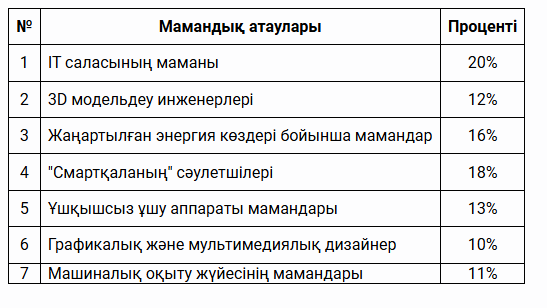
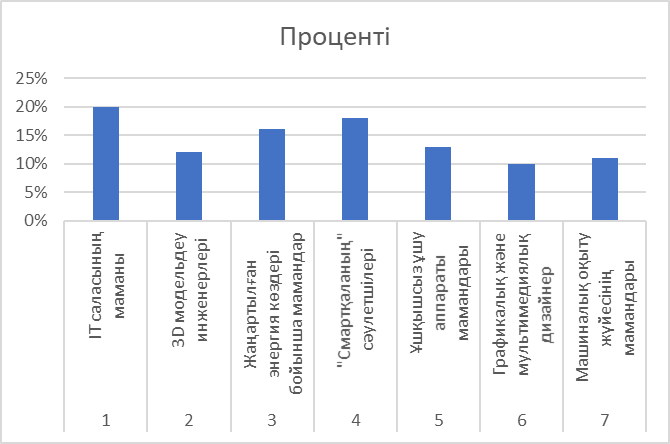
✓ Дұрыс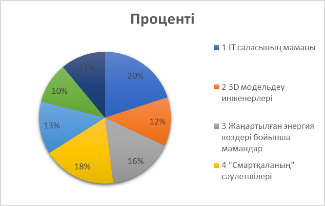
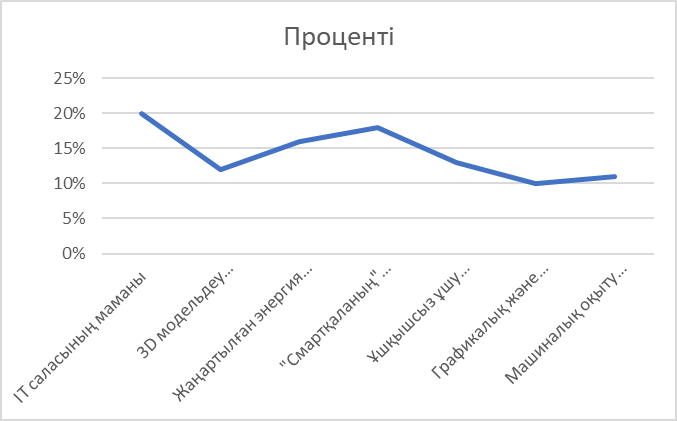
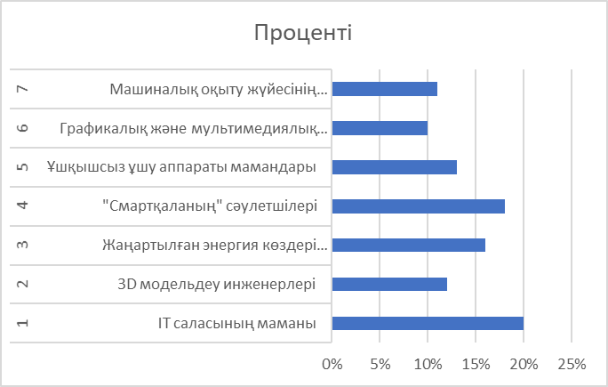
E2 және F2 ұяшықтарының формулаларын таңдаңыз:
Тариф шарттары:
1 адамға 12 текше метрге дейін — 6 тг
Артық пайдаланғаны үшін — 8 тг
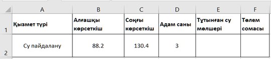
E2 = C2 - B2, F2 = 12*D2*6 + (E2 - 12*D2)*8
E2 = C2 - B2, F2 = 36*6 + (E2 - 36)*8
E2 = (C2 - B2)*D2, F2 = 6*D2 + (E2 - 12)*8
E2 = C2 - B2, F2 = 12*6 + (E2 - 12)*8
F = 1 болу үшін айнымалылардың мәні қандай болуы керек?
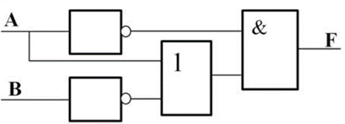
A = 0, B = 0
A = 1, B = 0
A = 0, B = 1
A = 1, B = 1
E5 ұяшығындағы формула қандай?
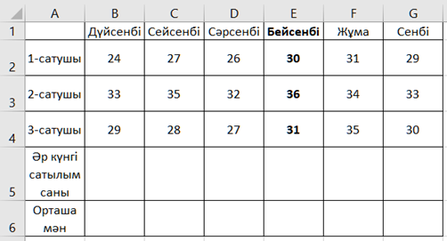
=E2+E3+E4
=F2+F3+F4
=G2+G3+G4
=H2+H3+H4
Массивтің көршілес тұрған екі жұп элементін салыстыру арқылы сұрыптау әдісі:
көпіршік
жылдам
кірістіру
таңдау
Реляциялық деректер қорында кестеге енгізу қажет деректер мәндерін қойған кезде бір немесе екі тырнақшаға алмай берілетін тип:
CHAR()
VARCHAR()
INT
DATE
10110₂, 1A₁₆, 24₈, 26₁₀ сандарының ең кішісі қайсысы?
24₈
10110₂
1A₁₆
26₁₀
Web-бетте шрифт түсі — көк, фон түсі — сары, ал тақырып жолында "My Page" деп жазылуы үшін қажетті HTML код:
<head><title>My Page</title></head> <body><p style="background:yellow; color:blue;"> Web-технологиялар </p></body></html>
<head><title>My Web</title></head> <body><p style="background:lime; color:red;"> Web-технологиялар </p></body></html>
<head><title>My Page</title></head> <body><p style="background:blue; color:yellow;"> Web-технологиялар </p></body></html>
<head><title>My Page</title></head> <body><p style="background:gray; color:green;"> Web-технологиялар </p></body></html>
Элементтерді бір-бірімен салыстырып, ең кіші элементті тауып, оны массивтің басына орналастыратын сұрыптау әдісі:
таңдау
көпіршік
кірістіру
жылдам
Деректерді сымсыз қосылыс арқылы тасымалдау жылдамдығы 4 000 000 бит/с. Осы қосылыс арқылы 10 Мбайт файлды тасымалдауға кететін уақыт:
21 секунд
15 секунд
25 секунд
30 секунд
Ішкі программаны шақыру кезінде нақты мәндер берілетін абстрактілі айнымалылар:
параметрлер
процедуралар
функциялар
рекурсия
256 таңбалық әліпбимен жазылған 80 таңбадан тұратын хабарламаның ақпараттық көлемі
640 бит
560 бит
80 байт
10 байт
CHAR(n) мен VARCHAR(n) деректер типтерінің арасындағы басты айырмашылық:
CHAR(n) – мәтін қысқа болса, бос орынмен толтырылады, VARCHAR(n) – артық бос орын сақталмайды, нақты енгізілген символдар алынады.
VARCHAR(n) – тек сандар үшін қолданылады, ал CHAR(n) – мәтін үшін
CHAR(n) – уақытты сақтауға арналған деректер типі, VARCHAR(n) – мәтіндік деректерді сақтауға арналған деректер типі
VARCHAR – тұрақты ұзындықты, ал CHAR – айнымалы ұзындықты мәтін сақтайды.
Компьютерді баптау мен оның конфигурациялары туралы деректерді сақтауға негізделген жад:
CMOS
ҚМД
СЕСҚ
VRAM
Реляциялық деректер қорында деректер сақталатын объект:
кесте
сұраныс
макрос
форма
Жұп сандарды анықтайтын программаның жолдарының дұрыс ретін көрсетіңіз:
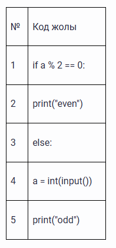
4, 1, 2, 3, 5
1, 4, 2, 3, 5
4, 1, 5, 3, 2
1, 3, 5, 2, 4
Төмендегі HTML және CSS кодын орындағанда экранда қандай нәтиже көрсетіледі?
<!DOCTYPE html>
<html>
<head>
<style>
#box {
width: 200px;
height: 100px;
background-color: lightblue;
border: 2px solid black;
margin: 10px auto;
padding: 20px;
text-align: center;
color: red;
font-weight: bold;
}
</style>
</head>
<body>
<div id="box">WEB DESIGN</div>
</body>
</html>
Қызыл түсті "WEB DESIGN" мәтіні көк фонда, өлшемі 100px x 200px болатын, қалың жиекті орталықта орналасқан.
Көк фонда қара мәтін, солға жылжытылған, ешқандай жиексіз және шрифт қалың емес.
Қызыл түсті "WEB DESIGN" мәтіні көк фонда, өлшемі 100px x 200px болатын, қалың жиекті сол жақ жиегінде орналасқан.
Сұр фонда "WEB DESIGN" мәтіні көк фонда, блоктың өлшемі көрсетілмеген, экранның оң жақ шетінде орналасқан.
Мақалада 300 бет бар. Әр бетте 60 жол, ал әр жолда 80 символ жазылған. Егер 1 символ 1 байт көлем алса, бұл мақала 1 Гб флеш-дискінің қанша бөлігін алады?
0,0014
0,012
0,014
0,00014
Кіру файлында берілген жолдың (латын әріптерінен тұратын) әрбір символын n жолынан кездесу санын анықтау үшін қажетті негізгі әрекетті көрсететін жол:
f1 = open('in.txt', 'r')
f2 = open('output.txt', 'w')
s = f1.readline()
n = ''
for i in range(0, len(s)):
if n.count(s[i]) == 0:
n = n + s[i]
f2.write(str(len(n)))
f1.close()
f2.close()
if n.count(s[i])==0:
s=f1.readline()
f2.write(str(len(n)))
n=n+s[i]
Төмендегі сипаттамалар қай элементтің артықшылықтарын білдіреді?
Бірдей мәні бар жазбаларды енгізуге және сақтауға мүмкіндік бермейді;
Кестелер арасында байланыстар орнатылады;
Қажетті жазбаларды іздеуді және сұраныстарды орындауды тездететін индекс құрылады;
Мәндер өсу немесе кему ретімен автоматты түрде сұрыпталады және бейнеленеді.
кілтті пайдаланудың артықшылықтары
индексті пайдаланудың артықшылықтары
форманы пайдаланудың артықшылықтары
есепті пайдаланудың артықшылықтары
Сандар тізбегінен ең кішісін табу үшін бағдарлама жазылған. Бұл бағдарламаны қысқа әрі құрылымды ету үшін ішкі бағдарлама қолданылған.
Берілген бағдарламада қолданылған ішкі бағдарлама түрін көрсетіңіз:
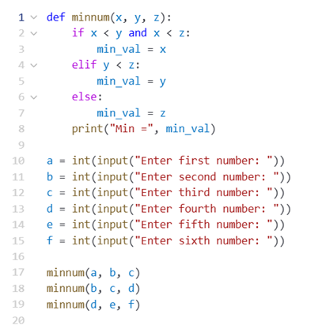
процедура
рекурсия
лямбда-функция
функция
Сандар тізбегінен ең кішісін табу үшін бағдарлама жазылған. Бұл бағдарламаны қысқа әрі құрылымды ету үшін ішкі бағдарлама қолданылған.
Бағдарламада қолданылған ішкі бағдарламаның түрі:
параметрлі, параметрлері x, y, z
параметрлі, параметрлері a, b, c, d, e, f
параметрсіз
параметрлі, параметрлері min, max
Сандар тізбегінен ең кішісін табу үшін бағдарлама жазылған. Бұл бағдарламаны қысқа әрі құрылымды ету үшін ішкі бағдарлама қолданылған.
Бағдарламада қолданылған ішкі бағдарламаның атауы:
minnum
min
def
min_val
Сандар тізбегінен ең кішісін табу үшін бағдарлама жазылған. Бұл бағдарламаны қысқа әрі құрылымды ету үшін ішкі бағдарлама қолданылған.
Берілген бағдарламада негізгі (басты) программа басталатын жол нөмірі:
10-жол
1-жол
2-жол
17-жол
Сандар тізбегінен ең кішісін табу үшін бағдарлама жазылған. Бұл бағдарламаны қысқа әрі құрылымды ету үшін ішкі бағдарлама қолданылған.
Жаһандық айнымалының мәнін ішкі программада өзгерту үшін қолданылатын кілттік сөз:
global
local
change
var
Ақиқат кестесіне формула берілген: F=(AvB)^(¬(CvA)^B)
Программаға төмендегі мәндерді енгізген кезде шығатын нәтижені сәйкестендір
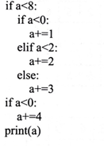
Хаттамаларды қызметтерімен сәйкестендір
Берілген кестеге қарап, сұрақтар мен жауабын сәйкестендір
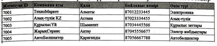
С3 ұяшығына "=(C1*A$5)+($B$2+D1)" формуласы жазылды
Алфавит қуаттылығы 32 символ, ақпарат көлемі 160 байт болса, мәтіндегі символ саны қанша?
256
2⁸
32
160
5
2⁵
Реляциялық деректер қоры кестесіндегі кілттік өріс ерекшелігі (терін) таңдаңыз.
бірдей мәндер болмайды
кестелер арасында байланыс орнатылады
жазбаларды іздеуді тездетеді
мәндерінің символдар саны бірдей болады
барлық мәндері бірдей болады
мәндері латын символдарынан құралады
Берілген бағдарламаларда a мен b тізімдерінің мәндерін анықтаңыз:
my_list = [4, -2, 10, 0, 7]
a = sorted(my_list)
b = sorted(my_list, reverse=True)
-2, 0, 4, 7, 10
10, 7, 4, 0, -2
0, 4, 7, 10, -2
4, -2, 0, 7, 10
-2, 10, 4, 0, 7
10, -2, 7, 0, 4
315₁₀ санынан кіші сан(-дар):
100111001₂
460₈
13A₁₆
13F₁₆
476₈
100111110₂
Диалогтік терезені шығарып, пайдаланушыдан OK батырмасын басуын күтетін JavaScript функциясын таңдаңыз
alert()
prompt()
result()
document.write()
confirm()
document.writeln()
экстремум нүктелерін табыңыз.
A)
B)
функциясы берілген
А) мәндер облысына кірмейтін сан
В) анықталу облысына кірмейтін сан
3
-1
-2
5
функцияның ең үлкен және ең кіші мәнін табыңыз
-3
7
2
10
теңдеуді шешшіп және ні табыңыз:
4
-17
12
10
берілген көп мүшенің дәрежесін және коффиценттін табыңыз
17
10
15
30
уақыт мезетіндегі заңы бойынша қозғалатын материалдық нүктенің жылдамдығы және үдеуді табыңыз
95
30
90
34
92
35
функциясы берілген теңсіздігін қанағаттандыратын бүтін сандарды анықта
0
1
2
0,04
3
4
және сызықтарымен шектелген фигураның ауданын табыңыз
15
теңдеудің түбірі бойынша табыңыз
8
16
Есептеңіз:
Үшбұрыш. Оқушы дәптеріне кез келген үшбұрышты сызады. Үшбұрыштың қабырғаларын екіден әр түрлі нұсқада қосқанда ол 16см, 13см және 15см-ге тең қосындыларды алды.
26.Үшбұрыш қабырғаларының ең қысқа ұзындығы
5см
8см
6см
7см
Үшбұрыш. Оқушы дәптеріне кез келген үшбұрышты сызады. Үшбұрыштың қабырғаларын екіден әр түрлі нұсқада қосқанда ол 16см, 13см және 15см-ге тең қосындыларды алды.
27.Алынған үшбұрыштың түрін анықта
Әртүрлі қабырғалы
Теңқабырғалы
Теңбүйірлі
Анықтау мүмкін емес
Үшбұрыш. Оқушы дәптеріне кез келген үшбұрышты сызады. Үшбұрыштың қабырғаларын екіден әр түрлі нұсқада қосқанда ол 16см, 13см және 15см-ге тең қосындыларды алды.
28.Үшбұрыштың периметр
19см
18см
16см
22см
Үшбұрыш. Оқушы дәптеріне кез келген үшбұрышты сызады. Үшбұрыштың қабырғаларын екіден әр түрлі нұсқада қосқанда ол 16см, 13см және 15см-ге тең қосындыларды алды.
29.Үшбұрыштың ең үлкен және ең кіші қабырғаларының айырмасы
3см
5см
6см
8см
Үшбұрыш. Оқушы дәптеріне кез келген үшбұрышты сызады. Үшбұрыштың қабырғаларын екіден әр түрлі нұсқада қосқанда ол 16см, 13см және 15см-ге тең қосындыларды алды.
30.Үшбұрыштың ауданы
Өрнектің мәнін табыңыз: көпмүшесіндегі болғандағы мәнін табыңыз
22
-32
-44
-40
функциясыныңнүктесіндегі туындысын табыңыз
Егер берілген теңдеулер жүйесінің шешімі болса , өрнегінің мәнін табыңыз
6
5
3
4
теңсіздікті шешіңіз
Қабырғасы 6 ,сүйір бұрышы болатын ромбтың ауданын табыңыз
өрнегінің мәнін табыңыз
теңдеуінің түбірін табыңыз
100
1
10
0,1
функциясына нүктесінде жүргізілген жанама теңдеуін табыңыз
Теңдеудің шешімі жатқан аралықтабыңыз:
функцияның туындысын табыңыз:
жәнефункцияларымен шектелген фигураның ауданын табыңыз
теңдеулер жүйесінің қосындысын табыңыз
30
25
20
35
Интегралды табыңыз:
анықталу облысын табыңыз
Есептеңіз:
4
5
3
2
Табандары 4 және 8-ге тең теңбүйірлі трапецияға іштей шеңбер сызылған. Шеңбердің радиусын табыңыз
Теңдеулер жүйесін шешіңіз:
Амалды орындаңыз:
1
5
4
3
Өспелі геометриялық прогрессияда болса, геометриялық прогрессияның еселігін табыңыз
2
3
4
5
Табаны 3,4 және биіктігі 4 болатын тік бұрышты үшбұрышты призма берілген. Призманың толық бетінің ауданын табыңыз
60
54
64
72
теңдеудің түбірлерінің көбейтіндісін есептеңіз
-9
9
-8
8
Параллелограмның 13см-ге тең диагоналының ұзындығы 12см болатын қабырғасына перпендикуляр болса, параллелограмның ауданын табыңыз
78
120
96
156
Теңдеуді шешіңіз:
2
-2
1
-1
теңдеуді шешіңіз
функцияның ең кіші оң периодын табыңыз